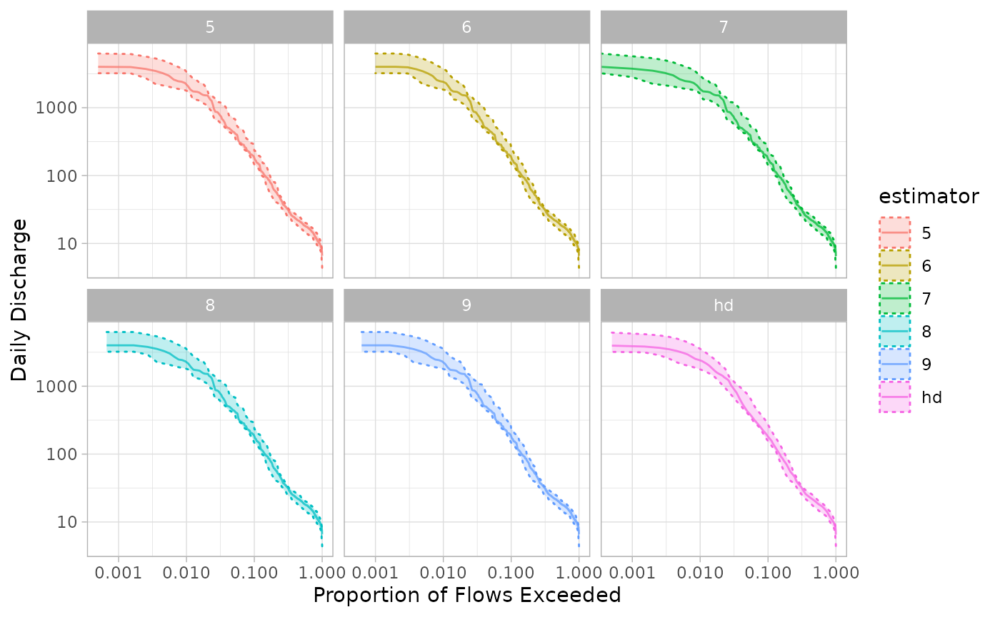

Vogel and Fennessey (1994) describes the flow duration curve (FDC), from which the load duration curve (LDC) is calculated, as the complement of the cumulative distribution function of daily streamflow. For each value of discharge, the corresponding exceedance probability \(p\) is calculated as 1 minus the empirical cumulative distribution function. \(p\) is calculated for each observation \(Q_i\) where \(i = 1, 2, ... n\):
\[ p = 1 - P \{Q_i\le q_0\} \\ \]
The quantile \(Q_p\) is the empirical quantile function.
The default method for estimating \(p\) is the Weibull plotting position (estimator = 6). The Weibull plotting position provides a unbiased estimates of \(p_i\) regardless of the underlying streamflow distribution (Vogel and Fennessey 1994). The Weibull plotting position is calculated \(p\) where \(q_i\), \(i = 1, 2, ... n\), is the \(i\)th sorted streamflow value:
\[ p = P(Q > q_i) = \frac{i}{n+1} \]
This is equivalent to \(Q_{p,1}\) described in Vogel and Fennessey (1994) and is the default method used in calc_ldc() and calc_annual_ldc().
The Harrell-Davis distribution-free quantile estimator (estimator = "hd") is described by Harrell and Davis (1982), which is equivalent to \(Q_{p,3}\) described in Vogel and Fennessey (1994). The math is not included here, but can be found in both Vogel and Fennessey (1994) and Harrell and Davis (1982). Vogel and Fennessey (1994) note this estimator provides smoother estimates of quantiles than \(Q_{p,1}\) for small samples. This is particularly advantageous in calculating annualized flow duration curves and only included for the calc_annual_ldc() function. The calc_annual_ldc() function returns the quantiles only at measured streamflow values, so estimation of quantiles is not needed they are returned directly by the plotting position methods (estimator = 5:9).
Exceedance probabilities can also be calculated using the continuous sample quantiles types 5 through 9 documented in quantile(). Type 6 is the default and described above. Type 5 is described in Hanzen (1914):
\[ p = P(Q > q_i) = \frac{i - 0.5}{n} \]
The figure below shows the annual FDC resulting from each of the estimator methods:
#> udunits database from /usr/share/xml/udunits/udunits2.xml
#>
#> Attaching package: 'dplyr'
#> The following objects are masked from 'package:stats':
#>
#> filter, lag
#> The following objects are masked from 'package:base':
#>
#> intersect, setdiff, setequal, union
#> Warning: Transformation introduced infinite values in continuous x-axis
#> Warning: Transformation introduced infinite values in continuous x-axis
The x-axis is log transformed to highlight differences in the highest flow regimes. Methods 5 through 9 have minor differences in shape, although estimates are very close. The Harrell-Davis method results in a notably smoother estimated median and confidence interval.
Hanzen, Allen. 1914. “Storage to Be Provided in Impounding Municipal Water Supply.” Transactions of the American Society of Civil Engineers 77 (1). https://doi.org/10.1061/taceat.0002563.
Harrell, Frank E, and C E Davis. 1982. “A New Distribution-Free Quantile Estimator.” Biometrika 69 (3).
Vogel, Richard M., and Neil M. Fennessey. 1994. “Flow‐Duration Curves. I: New Interpretation and Confidence Intervals.” Journal of Water Resources Planning and Management 120 (4): 485–504. https://doi.org/10.1061/(ASCE)0733-9496(1994)120:4(485).